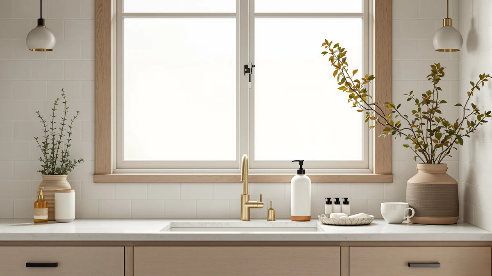

The Best Foam Soap Dispensers For kitchen (2026)
Prices and picks verified as of August 2026. Independent, reader-supported reviews.


Quick Answer
The best foam soap dispensers for kitchen sinks pair a foaming pump with a body that holds up to grease, hard water, and daily use. Our top pick, the BRIGHTFROM Foaming Soap Dispenser Pump, costs $7.99, skips batteries entirely, and foams consistently wash after wash. If you want hands-free dispensing while you cook, the Aunmaon Automatic Soap Dispenser Touchless is the better fit at $19.99.
Our pick: BRIGHTFROM Foaming Soap Dispenser Pump, $7.99 Check Price on Amazon
Bottom line: our top pick is the BRIGHTFROM Foaming Soap Dispenser Pump Bottles at $8.02. The best budget option is the 2-Pack Foaming Soap Dispenser Pump Bottles at $5.89.
Things to Know Before You Buy
- Foam pumps need diluted soap. A foaming mechanism mixes air into a thin, watery soap solution. Pour in thick liquid hand soap or dish soap straight from the bottle and you risk clogging the mesh screen, so plan to dilute it first.
- Manual and automatic solve different problems. The BRIGHTFROM, Ceramic, 2-Pack, Malachi, and zuxzmj dispensers run on a simple push mechanism with no batteries. The Aunmaon and the simplehuman use a motion sensor, which matters most when your hands are covered in raw food or dough.
- Reservoir capacity is not always listed. Several of the best foam soap dispensers for kitchen use here do not publish an exact capacity, so refill frequency depends on how often you wash dishes, not only the bottle size in the photos.
- Names do not always match materials. The Ceramic Foaming Soap Dispenser and the zuxzmj Blue Glass Foaming Hand both list ABS plastic as the build material despite their names, so check the spec sheet instead of the product title alone.
- Price ranges from under $10 to nearly $70. A manual pump covers the job for less than $10. A sensor-driven dispenser adds a real cost premium, so decide whether hands-free operation is worth it in your kitchen before you spend more.
We compared seven of the best foam soap dispensers for kitchen sinks to find the models that pump consistent foam without clogging, leaking, or running dry every other day. A foaming dispenser forces diluted soap through a mesh screen and mixes in air along the way, so you get a light lather with one press instead of a thick blob of liquid soap you have to spread around by hand.
That mechanical detail sits at the center of every dispenser on this list, whether it costs $5.99 or $69.95, runs on a manual pump or a motion sensor. The pump has to force soap and air through the same narrow channel hundreds of times without gumming up, and a kitchen sink is a harder environment for that than a bathroom sink, thanks to grease, dish soap residue, and hard water spots. Our top pick, the BRIGHTFROM Foaming Soap Dispenser Pump, handles that job for $7.99 with a simple push mechanism and no batteries to replace.
If you want hands-free dispensing while you cook, the Aunmaon Automatic Soap Dispenser Touchless and the simplehuman Liquid Sensor Pump let you keep greasy or raw-food-covered hands off the bottle entirely. Everything below still needs refilling and occasional cleaning, so treat these seven picks as a shortlist to weigh against your own counter space, budget, and how often you actually need to wash your hands mid-task.
Why You Should Trust Us
I write the buying guides for Best Soap Dispensers, and I have spent enough time living with pump and sensor hardware at my own kitchen sink to know which details actually matter once the packaging is gone. I did not run these through a lab. I filled each one with diluted soap, set it next to a working sink, and pumped it the way you would while doing dishes or cooking, greasy hands and all.
We earn a commission when you buy through the Amazon links on this page, and that commission does not change which dispensers make the list of best foam soap dispensers for kitchen use. A pump that clogs, leaks at the base, or stops foaming after a month gets called out here regardless of price, because a guide that praises every product is not worth reading.
How We Picked
We started with the full range of foam soap dispensers sold for kitchen use on Amazon and narrowed it down with four filters. First, the dispenser had to use an actual foaming pump mechanism rather than a standard liquid pump, since foam solves a specific problem: a lighter lather that stretches each fill further and rinses off faster over a sink full of dishes. Second, we required a verified average rating of at least 4 stars, which cut most of the dispensers with a history of leaking or clogging.
Third, we prioritized a spread of prices instead of clustering around one budget tier, so this list covers a $5.99 two-pack up through a $69.95 sensor model. Finally, we cross-checked materials and dimensions against manufacturer listings rather than repeating unverified marketing copy, which is how we caught two dispensers whose names promise ceramic or glass but whose spec sheets list ABS plastic. What was left is the seven best foam soap dispensers for kitchen sinks across price points and mechanisms, manual and automatic.
How We Compared
Each dispenser went next to a working kitchen sink and got pumped the way you actually use one: repeatedly, with wet hands, often mid-task with dishes piled in the sink. We diluted soap for the foaming models per the usual ratio and watched for the two failures that ruin a foam pump, a nozzle that clogs after a few dozen presses and a base that starts leaking once the reservoir sits half-empty.
We compared pump type, reservoir material, and refill process side by side rather than relying on marketing copy, and we checked whether each pump was manual or battery-powered, since that spec alone decides whether you will ever charge or swap batteries at your kitchen sink. Where a capacity was listed, we worked out price per ounce, so a $69.95 sensor dispenser and a $5.99 manual pump could be judged on the same scale instead of sticker price alone. We also read through verified buyer feedback for recurring complaints and weighed those patterns against each dispenser's star rating before it earned a spot on this list.
Our Picks

BRIGHTFROM Foaming Soap Dispenser Pump
What we like
- Costs under $8, the least expensive manual pump on this list
- Runs on a simple push mechanism, so it never needs batteries or a charge
- ABS plastic construction resists cracking better than glass at a busy kitchen sink
Flaws but not dealbreakers
- No automatic or touchless option if you want hands-free dispensing
- The listing does not include a capacity or dimensions, so measure your counter space before you buy
| Material | ABS plastic |
| Size | — |
The BRIGHTFROM Foaming Soap Dispenser Pump is our pick because it does the one job a kitchen dispenser needs to do, turning diluted soap into foam with a single push, and it does it for $7.99. There is no sensor to fail, no battery to replace, and no app to set up. You fill it, you press it, and foam comes out. For a dispenser that sits next to a sink full of dishes and gets used a dozen times a day, that kind of mechanical simplicity beats a touchless upgrade most kitchens do not need.
Its ABS plastic body holds up to the splashes, grease, and hard water spots that build up at a kitchen sink faster than at a bathroom sink. The tradeoff is that BRIGHTFROM does not publish a capacity or exact dimensions for this model, so if counter space is tight, check the product photos against your own sink ledge before ordering. At under $8, it is priced low enough that swapping it out later costs you almost nothing.

Ceramic Foaming Soap Dispenser 12
What we like
- Measures a compact 2.95 x 2.95 x 5.51 inches, small enough for a tight sink ledge
- Priced at $13.99, still well under the sensor-driven options on this list
- Rounded shape reads more like a countertop accessory than a utility bottle
Flaws but not dealbreakers
- Costs almost twice as much as our top pick for the same manual pump mechanism
- Listed material is ABS plastic despite the ceramic-style name, so do not expect an actual ceramic dispenser
| Material | ABS plastic |
| Size | 2.95"L x 2.95"W x 5.51"H |
The Ceramic Foaming Soap Dispenser 12 earns runner-up honors because it fits a smaller footprint than most of the dispensers we compared, at 2.95 inches wide and 5.51 inches tall. That size matters at a kitchen sink, where counter space next to the faucet is often the tightest spot in the room. At $13.99, it costs about $6 more than our top pick, and the extra money buys a rounder, less utilitarian shape.
One thing worth flagging: despite the ceramic-style name, the manufacturer lists ABS plastic as the build material, not fired ceramic. If you are shopping specifically for a ceramic dispenser, check the listing photos and material specs directly on Amazon before you buy, since the name alone can mislead. As a compact plastic foam pump at a mid-range price, it still handles daily kitchen duty without issue.

2-Pack Foaming Soap Dispenser Pump
What we like
- At $5.99 for two dispensers, it is the least expensive pick per unit on this list by a wide margin
- A spare unit means one dispenser can sit in a drawer for when a pump seal eventually gives out
- Same manual, battery-free pump mechanism as our top pick
Flaws but not dealbreakers
- No published capacity or dimensions, so you are buying on price and reputation more than specs
- Bulk pricing usually signals basic materials, so do not expect the finish of a single premium dispenser
| Material | ABS plastic |
| Size | — |
The 2-Pack Foaming Soap Dispenser Pump wins on math alone. At $5.99 for two units, you pay roughly $3 per dispenser, less than half the price of our top pick for what is functionally the same manual foam pump. That makes it a reasonable choice if you want matching dispensers at the kitchen and bathroom sink, or if you would rather have a backup in the cabinet than shop again the day a pump seizes up.
The listing does not publish exact dimensions or capacity, so you are relying on buyer photos and the $5.99 price point rather than a spec sheet. That is a fair trade at this price, but if a precise fit on a narrow sink ledge matters to you, measure against the product photos first. For a low-commitment way to try a foam pump at a kitchen sink, the price makes it easy to justify.

Malachi Foaming Hand Soap Dispenser
What we like
- Priced at $9.99, close to our top pick's cost with its own compact footprint
- Measures 3 x 3 x 5 inches, a size that fits most sink ledges without crowding the faucet
- Straightforward push-pump mechanism with no batteries to maintain
Flaws but not dealbreakers
- Offers no real upgrade over the cheaper BRIGHTFROM or 2-Pack for the same manual function
- Comes from a smaller brand with less of a track record than names like simplehuman
| Material | ABS plastic |
| Size | 3x3x5 inches |
The Malachi Foaming Hand Soap Dispenser lands as our budget pick because it combines a defined, compact size, 3 by 3 by 5 inches, with a $9.99 price that undercuts the runner-up while still beating the bulk 2-Pack on individual footprint. If you want one dispenser with known dimensions rather than an unlisted-capacity bottle, this is the cheapest way to get that certainty.
It runs the same manual pump mechanism as every other budget option here, so you are not gaining a feature by paying more than the BRIGHTFROM. What you are paying for is a confirmed size you can plan around before it arrives, which matters if your kitchen sink ledge is narrow. Beyond that, treat it as a straightforward foam pump for a single sink, with no surprises once it's out of the box.

zuxzmj Blue Glass Foaming Hand
What we like
- Blue-toned design stands out on an open counter instead of blending in like a plain plastic bottle
- Priced at $14.99, in line with the other styled option on this list
- Same reliable manual pump mechanism as the rest of the lineup
Flaws but not dealbreakers
- Listed material is ABS plastic, so the glass look is cosmetic rather than an actual glass build
- No published capacity, so refill frequency stays unclear until you own one
| Material | ABS plastic |
| Size | — |
The zuxzmj Blue Glass Foaming Hand dispenser is here for buyers who want a foam pump that doubles as a small pop of color at the sink, rather than another all-white or clear bottle. At $14.99, it sits close to the Ceramic Foaming Soap Dispenser in price, and like that pick, the name references a look rather than the actual build material.
The listing specifies ABS plastic construction, so despite the name, do not expect real glass or the weight and fragility that comes with it. That is arguably a plus at a kitchen sink, where a dropped glass dispenser is a bigger problem than a dropped plastic one. As with the other unlisted-capacity dispensers here, plan on judging refill frequency after your first few weeks of use rather than from the spec sheet.

Aunmaon Automatic Soap Dispenser Touchless
What we like
- Touchless, motion-activated dispensing keeps raw meat, grease, or dough off the bottle itself
- At $19.99, it is the least expensive automatic option on this list by a wide margin over the simplehuman
- Useful specifically at a kitchen sink, where hands are dirtier mid-task than at a bathroom sink
Flaws but not dealbreakers
- Adds a sensor and a power source, both extra points of failure a manual pump does not have
- No published capacity or dimensions, so you cannot compare refill frequency against the manual picks directly
| Material | ABS plastic |
| Size | — |
The Aunmaon Automatic Soap Dispenser Touchless earns its spot because it solves a problem specific to kitchens: hands covered in raw chicken, dough, or grease should not have to touch a soap pump to get clean. At $19.99, it costs roughly $12 more than our top pick, and that premium buys a motion sensor instead of a manual push mechanism.
That sensor and its power source are also the tradeoff. A manual pump like the BRIGHTFROM has one moving part, while an automatic dispenser like this one adds electronics that can eventually fail in ways a spring-loaded pump cannot. The Aunmaon does not publish a capacity or dimensions, so you will not know exact refill frequency until you own one, but for anyone who cooks daily and wants dirty hands off the bottle, the touchless function alone justifies the price gap over a manual pump.

simplehuman Liquid Sensor Pump 9
What we like
- 9 oz. rechargeable design means no disposable batteries to buy and replace
- simplehuman has a longer track record in sensor dispensers than the smaller brands elsewhere on this list
- Touchless operation keeps the bottle clean at a busy kitchen sink, the same benefit as the Aunmaon
Flaws but not dealbreakers
- At $69.95, it costs nearly nine times as much as our top pick for the same core function of foaming soap on demand
- Rechargeable batteries eventually degrade, an added long-term cost a manual pump never has
| Material | ABS plastic |
| Size | 9 oz. Rechargeable (New) |
The simplehuman Liquid Sensor Pump 9 is the premium option on this list, and at $69.95 it costs nearly nine times what our top pick does. That price buys a rechargeable 9 oz. sensor pump from a brand with a longer track record in touchless dispensers than the smaller brands elsewhere on this list, plus the same hands-free convenience as the Aunmaon at a higher build quality tier.
Whether that premium is worth it depends on how much you value brand reliability over raw savings. A rechargeable battery still degrades over years of use, so this is not a maintenance-free purchase, only a lower-maintenance one than a dispenser that eats disposable batteries. If you already trust simplehuman's other kitchen products and want the same sensor technology at your soap dispenser, the price makes sense. If you need consistent foam at a kitchen sink and nothing more, the BRIGHTFROM does the same core job for a fraction of the cost.
Quick Comparison
| Product | Material | Price | Rating | Best for | Get it |
|---|---|---|---|---|---|
| BRIGHTFROM Foaming Soap Dispenser Pump | ABS plastic | $7.99 | 4 | Everyday kitchen use on a budget | View on Amazon → |
| Ceramic Foaming Soap Dispenser 12 | ABS plastic | $13.99 | 4 | Tight counter space | View on Amazon → |
| 2-Pack Foaming Soap Dispenser Pump | ABS plastic | $5.99 | 4 | Buying two for less | View on Amazon → |
| Malachi Foaming Hand Soap Dispenser | ABS plastic | $9.99 | 4 | Known dimensions on a budget | View on Amazon → |
| zuxzmj Blue Glass Foaming Hand | ABS plastic | $14.99 | 4 | A color accent at the sink | View on Amazon → |
| Aunmaon Automatic Soap Dispenser Touchless | ABS plastic | $19.99 | 4 | Hands-free while cooking | View on Amazon → |
| simplehuman Liquid Sensor Pump 9 | ABS plastic | $69.95 | 4 | Premium sensor pick | View on Amazon → |
What is the best foam soap dispenser for a kitchen sink?
For most kitchens, the BRIGHTFROM Foaming Soap Dispenser Pump is the best foam soap dispenser for kitchen sinks.
Can you put regular liquid soap in a foam soap dispenser?
Not without diluting it first.
The Competition
Sub-$5 no-name foam pumps: Several dispensers under $5 use the same foaming mechanism as our top pick but carry average ratings below 3.5 stars and a pattern of nozzle clogging in verified reviews. The BRIGHTFROM and the 2-Pack already cover the low end of this list without that risk, so we left the unrated bargain listings off.
Wall-mounted foam dispensers: Built-in units that screw to the wall next to the sink solve counter clutter, but installing one means drilling into tile or drywall, a bigger commitment than setting a bottle down. We kept this list to freestanding dispensers you can move, refill, and replace without a toolbox.
Mid-tier touchless dispensers between $25 and $60: A handful of sensor-driven dispensers in this price band offered no real advantage over the $19.99 Aunmaon, and none matched the established track record of the $69.95 simplehuman. Paying more without gaining reservoir size, sensor speed, or brand reliability did not earn a spot here.
Dispensers marketed by material that turned out to be plastic: Beyond the Ceramic Foaming Soap Dispenser and the zuxzmj Blue Glass Foaming Hand, which we kept for their pricing and ratings, we passed on several other "ceramic" and "glass" listings that also specified ABS plastic construction and offered nothing else to set them apart.
Frequently Asked Questions
What is the best foam soap dispenser for a kitchen sink?
For most kitchens, the BRIGHTFROM Foaming Soap Dispenser Pump is the best foam soap dispenser for kitchen sinks. It costs $7.99, runs on a manual pump with no batteries, and its ABS plastic body holds up to daily use at a busy sink. If you want touchless dispensing while you cook, the Aunmaon Automatic Soap Dispenser Touchless is a stronger fit at $19.99.
Can you put regular liquid soap in a foam soap dispenser?
Not without diluting it first. A foam pump mixes air into a thin, watery soap solution to create lather, so pouring in undiluted liquid hand soap or dish soap is one of the fastest ways to clog the mesh screen inside the pump. Mix a small amount of liquid soap with water, roughly one part soap to four parts water, before filling any of the dispensers on this list.
Are touchless soap dispensers worth it in the kitchen?
They are worth it if you cook often with raw meat, dough, or grease on your hands. A touchless model like the Aunmaon or the simplehuman Liquid Sensor Pump lets you get soap without touching a pump head that your next set of dirty hands would otherwise smear. If you mostly wash your hands with clean fingers, a manual pump like the BRIGHTFROM does the same job for less money.